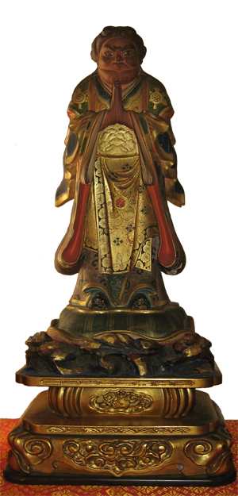

The protective deity from Chapter 26 of the Lotus Sutra, Kishimojin is located to the right of the Odaimoku. Across on the left is the Ten Rakahasas, Kishimojin's daughters.
This image of Kishimojin is kept on the Altar of the Las Vegas Temple. Learn more about Kishimojin by clicking this link.